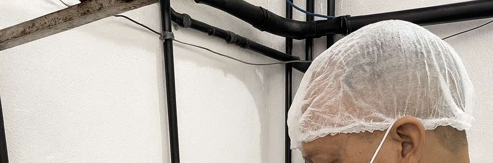
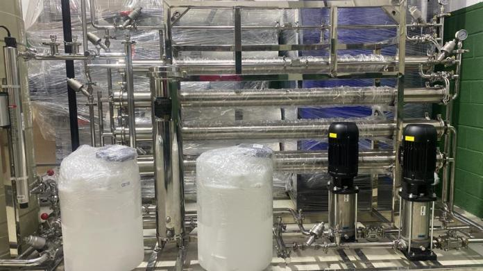

Locação · LinkedIn, 01 set 2026
Locação de desmineralizador: quando faz mais sentido do que comprar
Locação · LinkedIn, 01 set 2026
Locação de desmineralizador: quando faz mais sentido do que comprar
Manutenção não programada, aumento temporário de produção ou um novo projeto em desenvolvimento podem pedir uma solução mais rápida que um investimento definitivo.
Manutenção não programada, aumento temporário de produção ou um novo projeto em desenvolvimento podem pedir uma solução mais rápida que um investimento definitivo.
Nem toda demanda por água desmineralizada começa com a compra de um sistema definitivo.
Uma manutenção não programada, um aumento temporário de produção ou o período de desenvolvimento de um novo projeto podem exigir uma solução mais rápida. Nessas situações, a locação de um desmineralizador pode apoiar a continuidade operacional e evitar que a empresa tome uma decisão de investimento antes de compreender completamente a demanda.
Mas a escolha do equipamento não deve considerar apenas a vazão nominal. A qualidade da água de entrada, a concentração de sais, a qualidade exigida na saída, o volume diário e a autonomia entre regenerações influenciam diretamente a operação.
A Aclaris avalia a aplicação e configura a solução de locação de acordo com as condições reais do processo.
Sua empresa está enfrentando uma demanda temporária ou uma parada do sistema atual? Fale com nossa equipe técnica.
Publicado originalmente no LinkedIn da Aclaris.
 Engenharia · LinkedIn, jan 2026
Diagnóstico 360° vai além da análise da água
Engenharia · LinkedIn, jan 2026
Diagnóstico 360° vai além da análise da água
Ele avalia o sistema inteiro: operação, eficiência, consumo, riscos e oportunidades de melhoria, antes de qualquer decisão de investimento.
Ele avalia o sistema inteiro: operação, eficiência, consumo, riscos e oportunidades de melhoria, antes de qualquer decisão de investimento.
O Diagnóstico 360° vai além da análise da água. Ele avalia o sistema como um todo: operação, eficiência, consumo, riscos e oportunidades de melhoria.
É a base para decisões técnicas mais seguras, redução de custos, aumento de performance e maior vida útil dos equipamentos.
Antes de investir, ajustar ou expandir, é preciso entender. Diagnóstico 360° Aclaris. Clareza técnica para escolhas inteligentes.
Como o diagnóstico é feito
- Inspeção técnica e levantamento de dados de operação em campo
- Identificação de tipo, modelo, validade e estado operacional de filtros, válvulas, bombas, instrumentação, tanques, resinas e membranas
- Cálculo de eficiência, regenerações, perdas e consumo de insumos
- Relatório técnico com pontos críticos e plano de ação priorizado, entregue em até 7 dias úteis
Ver o escopo completo do Diagnóstico 360° →
Publicado originalmente no LinkedIn da Aclaris.

Stella Resinas · LinkedIn, jan 2026
Regenerar a resina na hora certa não é achismo, é controle de processo
Quando a resina satura, a qualidade da água começa a cair mesmo que o sistema ainda pareça estar "funcionando" normalmente.
Quando a resina satura, a qualidade da água começa a cair mesmo que o sistema ainda pareça estar "funcionando" normalmente.
Saber a hora certa de regenerar a resina de troca iônica não é achismo; é controle de processo.
Quando a resina satura, a qualidade da água começa a cair, mesmo que o sistema ainda esteja "funcionando".
Sinais de atenção
- Aumento de dureza ou condutividade na saída
- Perda de eficiência
- Variação de pH
- Volume tratado menor que o previsto em projeto
Regenerar no tempo certo evita retrabalho, protege equipamentos e mantém a água dentro do padrão esperado. Resina bem gerenciada é custo controlado, operação estável e segurança no processo.
Publicado originalmente pela Stella Resinas no LinkedIn, compartilhado pela Aclaris.

Capacitação · LinkedIn, fev 2026
Osmose reversa industrial: o treinamento que ensina a operar na prática
Operação incorreta de um sistema de osmose reversa impacta diretamente custo operacional, desempenho e confiabilidade do processo.
Operação incorreta de um sistema de osmose reversa impacta diretamente custo operacional, desempenho e confiabilidade do processo.
A operação correta de um sistema de osmose reversa industrial impacta diretamente custo operacional, desempenho e confiabilidade do processo.
Este treinamento técnico foi desenvolvido com foco em:
- Operação prática em sistema real
- Diagnóstico de falhas e perda de performance
- Boas práticas para aumento da vida útil dos sistemas
- Redução de erros que geram desperdício e retrabalho
Conteúdo direto, aplicado e voltado à realidade industrial.
Publicado originalmente por Stella Medeiros Yoshikawa, Diretora na Aclaris, no LinkedIn. Verificar se as inscrições para esta turma ainda estão abertas antes de divulgar.
4 publicações do LinkedIn da Aclaris, adaptadas para blog. As datas são aproximadas (o LinkedIn só informa "há X meses"); ajustar para a data exata na migração para o WordPress.